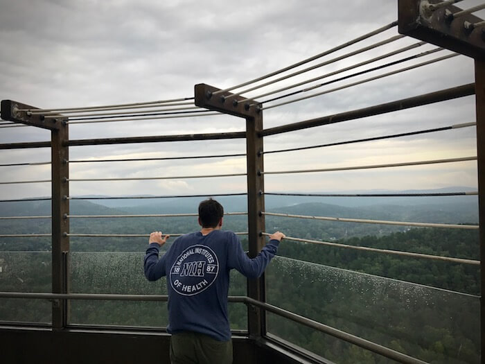
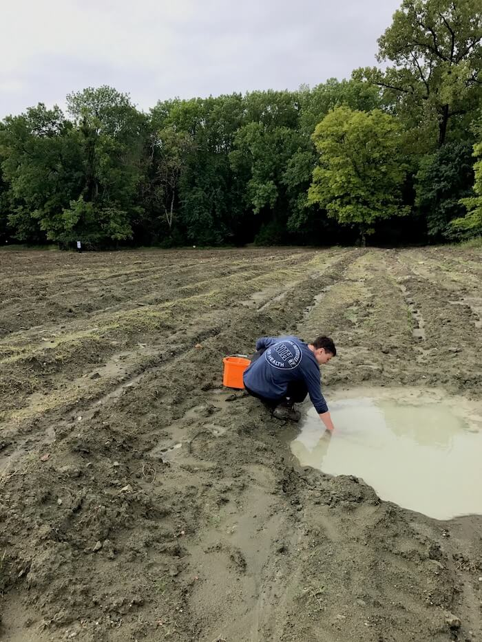

Nick's Birth State: Arkansas
August 15, 2017
Highlights
Hot Springs National Park
Ouachita National Forest
Crater of Diamonds State Park
Fresh off a wonderful stay in Nashville, we drove through Nick’s birth state of Arkansas. Our first stop was at Hot Springs National Park. We weren’t sure what to expect from America’s smallest national park, but we ended up having a great visit.
There are public fountains all over Hot Springs that bring you pure spring water straight out of the ground. We stopped at the first one we saw and there was a line of people filling 5 gallon containers with spring water and stuffing it in their pick ups and vans. We only filled up our water bottles; that was all we needed. The water had great taste but came out hot enough to make tea in. We let it cool and enjoyed it later.
Next we climbed Hot Springs Mountain Tower and got a bird’s eye view of the whole town. We could see steam rising out of the mountains all around us. Unfortunately we never actually got to jump in the water – all the bathhouses were closed for the day – but after descending the tower we strolled around the touristy main street and found it quite charming, if not a little deserted. It was obvious that Hot Springs’ heyday was in a different era. Streets once filled with wild west outlaws, famous nightclub acts, or partying baseball players were dotted with only the occasional family on an evening walk.
We spent the night camping in Ouachita National Forest and would have spent the morning swimming in its beautiful streams, but we had to get on the road to Crater of Diamonds State Park. We were excited to find a diamond and pay for our road trip all in one day. The park lets you keep anything you find, and we were feeling lucky. After hours spent digging in the mud, we turned up no gems, but it was a fun experience anyway. Maybe next time, Arkansas!
